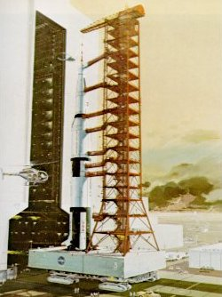
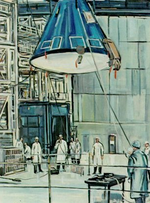
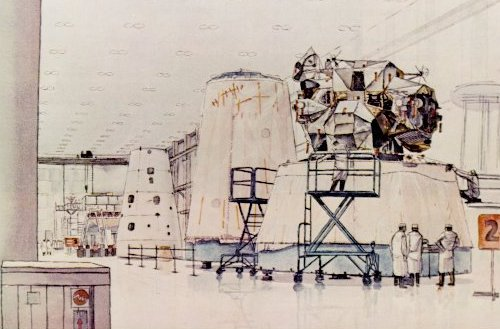
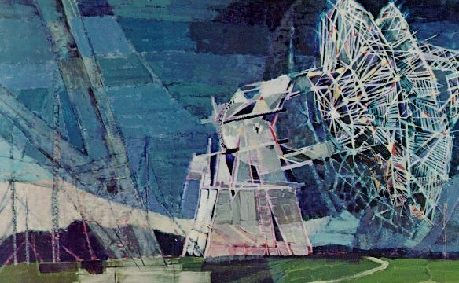
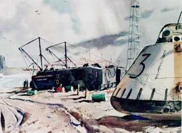
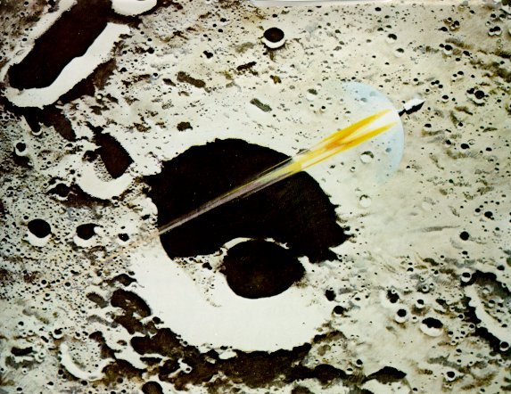
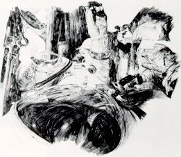

|  |
Robert McCall, ROLLOUT, oil on canvas Reproduced courtesy of Life magazine |
|  |
Tom O'Hara, CHECKING THE COMMAND MODULE, acrylic on paper |
|  |
|
Billy Morrow Jackson, LUNAR MODULE WHITE ROOM, watercolor on paper |
|  |
|
Paul Arlt, BIG DISH ANTENNAE, TANANARIVE, acrylic on canvas |
|  |
John Pike, BOILER PLATE, watercolor on paper |
|  |
| Robert McCall, APOLLO 8 COMING HOME, oil on panel |
|  |
Paul Calle, INSIDE GEMINI SPACECRAFT, pencil on paper |